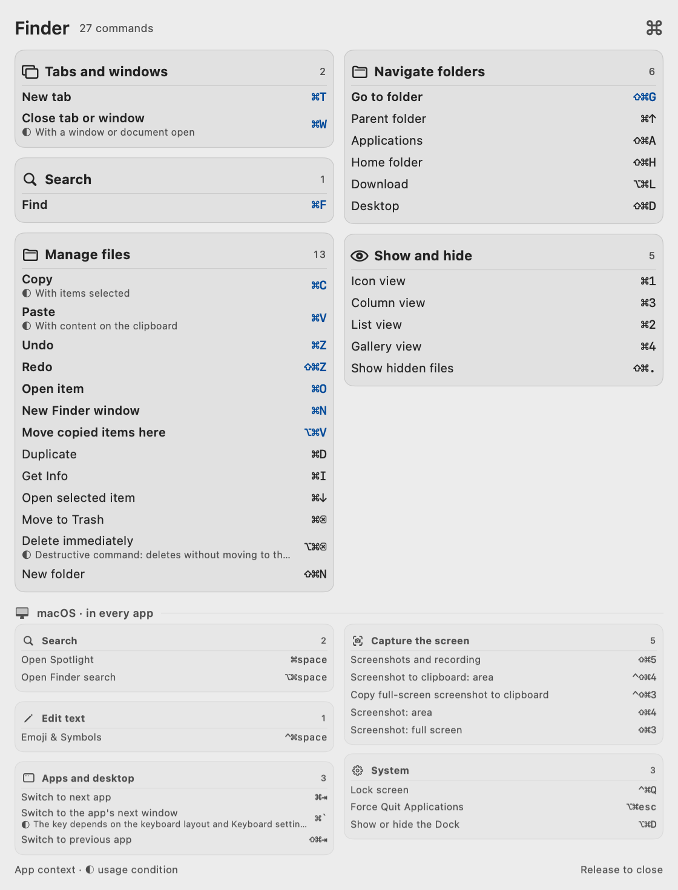
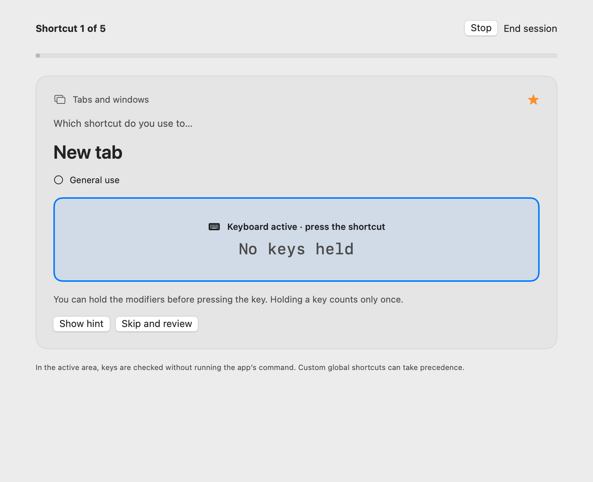

Your app’s shortcuts.
One held key away.
Hold a modifier. See what you can do in the app you’re using. Learn the combinations as you work.
Download for MacNot notarized. Read the installation steps


Hold a modifier to reveal the active app’s shortcuts. Release it to close the panel.
A brief look.
Back to your work.
Shortcuts lives in your menu bar. Its temporary panel stays out of the way of the app you’re using.
Hold a modifier
Press and hold Command, Option, Control, Shift or Fn. After a short delay, the panel appears.
Narrow the choices
Add another modifier to filter the combinations. Actions remain grouped by what you want to do.
Carry on
Release the modifiers to close the panel. It never takes focus and lets clicks pass through. Your shortcuts still go to your app.
Try the filter
Click the keys below. These are a few illustrative Finder shortcuts, not the app itself.
- New Finder window⌘N
- New tab⌘T
- Get Info⌘I
- New folder⇧⌘N
- Go to folder⇧⌘G
- Open Downloads⌥⌘L
Make the next shortcut
one you remember.
Open Studio to explore the catalog or practice with the keyboard. Choose an app, focus the exercise, and enter the combination or sequence. Review a mistake, then try again.


Studio brings the catalog, your favorites and keyboard practice into one window.
Keep the useful ones
Save favorites, hide actions you don’t need, and bring them back from Hidden. Import shortcuts you have already configured in your apps.
Read it your way
Choose English, Italian or automatic language. Adjust text size, appearance, panel position and the modifiers that open it.
Practice deliberately
Work on real chords and sequences. See errors, retry them, and keep your progress on your Mac. Practice only captures input while its exercise has focus.
A few steps.
Then it’s at hand.
This release is free and open source. It is not Developer ID signed or Apple-notarized, so macOS may ask you to approve it once.
Download for MacNo Screen Recording permission is needed. You can turn off Accessibility access at any time in System Settings. After an update, macOS may ask you to enable it again.
Move it to Applications
Download the DMG, open it, and drag Shortcuts into Applications. Then open Shortcuts from there.
Approve the first opening
If macOS blocks it, go to System Settings → Privacy & Security → Open Anyway, then confirm opening Shortcuts. Only approve the copy you downloaded from this project’s release.
Allow Accessibility
Enable Shortcuts in System Settings → Privacy & Security → Accessibility. This lets it read app menus and detect the held modifiers. Its Command icon then lives in your menu bar.
Know what
you’re installing.
What does Shortcuts read?
The active app’s accessible menus and structural context, offline shortcut catalogs, and supported editor keybinding files and extension declarations. It does not record what you type in other apps. There is no sign-in, telemetry or network traffic from the app; preferences and practice progress stay local.
Does it know every shortcut?
No. Coverage combines live menus, documented offline catalogs and supported VS Code/Cursor bindings. A recognized app is not a guarantee of complete coverage. Some menus load only when opened, and not every context or extension condition can be resolved. The app marks partial or conditional information.
Are both languages fully supported?
The interface, bundled catalog and exercises support English and Italian, with an automatic system-language option. An unfamiliar live command title from a third-party app stays in its original language when no translation is in the catalog.
Will it work on an older Mac?
Shortcuts requires macOS 13 or later. The download supports Apple silicon and Intel. Native Liquid Glass is available on macOS 26 and later; earlier systems use a translucent fallback. Reduce Transparency and Increase Contrast settings are respected.
Will an exercise run commands in another app?
Practice is a focused, local exercise. It captures input only while its keyboard field has focus, and OS-reserved combinations are excluded from typing exercises. The passive overlay is separate: it never intercepts your app’s commands.
Can I change or remove it?
Yes. Pause or quit it from the menu bar, revoke Accessibility permission in System Settings, or remove the app from Applications. The source is available under the MIT license, so you can inspect, build and adapt it.
Open source. Open to your ideas.
Check the code, correct a shortcut or help improve a translation.